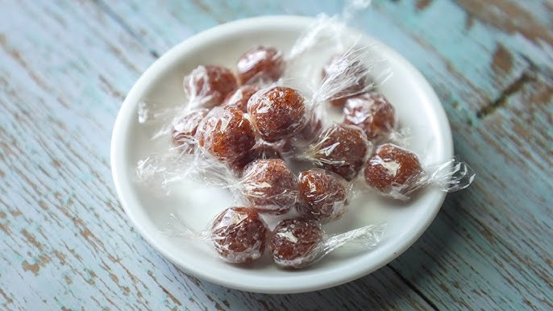

Home

Tamarind Candy
Description
Tamarind candy is a sweet and tangy treat made from tamarind pulp, sugar, and spices.
It is often enjoyed as a snack or dessert and is popular in many cultures around the world.
The unique flavor of tamarind gives this candy a distinctive taste that is both refreshing and satisfying.
Ingredients
- 1 cup tamarind pulp
- 1/2 cup sugar
- 1/4 teaspoon chili powder (optional)
- 1/4 teaspoon salt
Instructions
- In a bowl, mix tamarind pulp with sugar, chili powder, and salt.
- Knead the mixture until it forms a smooth dough.
- Shape the dough into small balls or bars.
- Let the candy dry for a few hours or until firm.
- Enjoy your homemade tamarind candy!